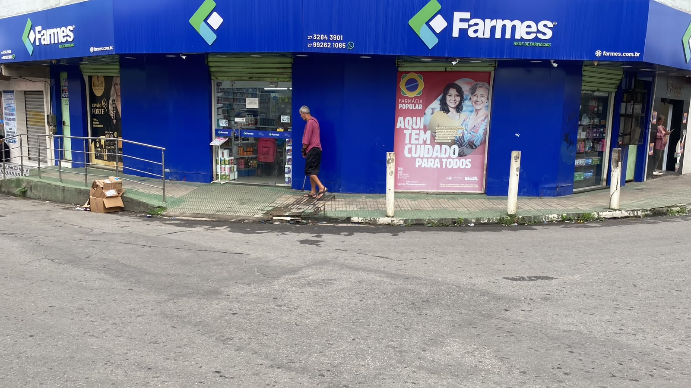

Medicamentos
Produtos farmaceuticos sem manipulacao de formulas, com atendimento focado em orientacao e praticidade.

Desde 2014 no mesmo local
Atendimento de farmacia com proximidade, organizacao e cuidado diario para familias de Cariacica e regiao.
Sobre nos
O Farmes Grupo RJ nasceu da presenca diaria junto aos clientes e segue ativo no mesmo local desde 2014, fortalecendo uma relacao de confianca com moradores, familias e trabalhadores da regiao. A rede reune unidades com atendimento proximo, variedade em medicamentos, itens de higiene, perfumaria, cuidados pessoais e produtos de conveniencia.
Cada unidade mantem sua identidade operacional, seu CNPJ e seu telefone de atendimento, mas compartilha o mesmo compromisso: orientar bem, atender com agilidade e oferecer uma experiencia simples para quem precisa resolver o cuidado do dia a dia com seguranca.
Categorias
Produtos farmaceuticos sem manipulacao de formulas, com atendimento focado em orientacao e praticidade.
Cosmeticos, itens de higiene pessoal e produtos de cuidado para diferentes rotinas da familia.
Artigos medicos, ortopedicos e itens de apoio para quem busca mais conforto no dia a dia.
Doces, bebidas, brinquedos e produtos complementares conforme o cadastro da unidade matriz.
Rede
Informacoes essenciais de cada unidade, organizadas para consulta rapida.
Matriz com comprovante cadastral
Unidade 02
Unidade 03
Unidade 04
Unidade 05
Unidade 06
Galeria
Contato e cadastro
Dados extraidos do comprovante de inscricao e situacao cadastral enviado.